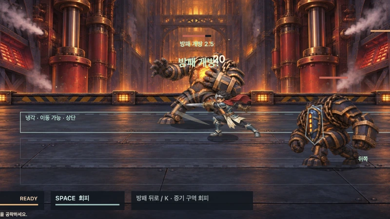
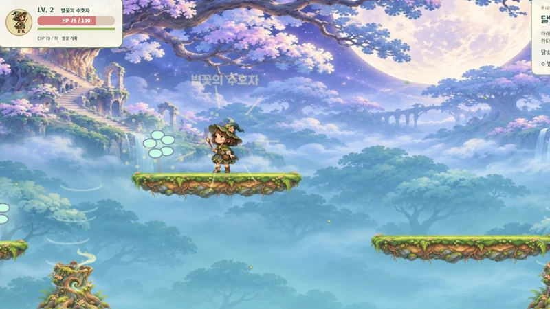
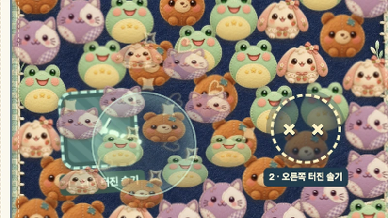
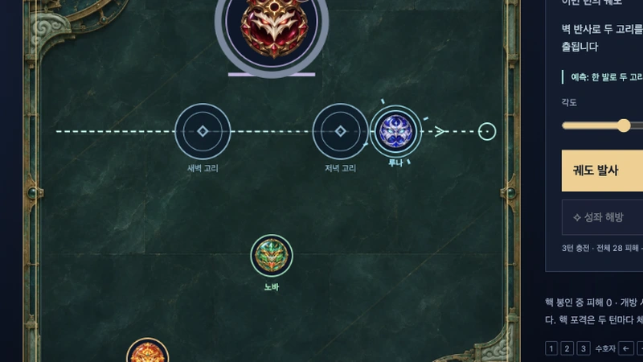

GAME STUDIO

감독관을 쓰러뜨린 뒤 사슬 승강장으로 가세요. 증기 예고를 읽고 방패의 옆을 잡으세요.

고원의 문을 지난 뒤 달빛 숲에 오르세요. 높이와 방향을 바꿔 두 봉화를 켜세요.

친구들을 구하고 수선실로 가세요. 별 단추를 솔기 근처에 남겨 두 곳을 수선하세요.

월식의 성소를 돌파하고 관측소로 가세요. 한 발로 두 고리를 잇고 열린 핵을 노리세요.